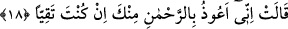

Biz ona Cebrâil’i gönderdik Cebrâil rûhânî bir varlıktır. Cebrâil’e ‘ruh’ denilmesi ruh
gibi latif olması ve dinin onunla hayat bulması sebebiyledir.
Büyüklerden birisi şöyle demiştir: Cebrâil, mücerred hakîkati bakımından hakîkaten
ruhtur. Misâlî sûreti bakımından ise mecâzen ruhtur. Mücerred ruhların özelliklerinden
birisi de zâtî sıfatlarından olan diri olmak ve misâlî sûretlerle temessül etmektir. Çünkü
o, temessül ettiği zaman neye dokunsa onu diriltir ve kendisinden ona hayat sirâyet eder.
Bundan dolayı Sâmirî Cebrâil’in burağının ayak izinden bir avuç toprak aldı ve
kavminin ziynet eşyalarından elde edilmiş bir buzağı şekline soktu. Hayatın kendisine
sirâyet etmesiyle de buzağı böğürdü.
Allah Cebrâil (a.s.)’ı sevdiği için ve kendisine yakın kılmak üzere mecâzen ona “ruh”
dedi. Nitekim sen de sevdiğin kimseye “Sen benim ruhumsun (canımsın)” dersin.
“Cebrâil, ona düzgün bir insan şeklinde göründü.” Yani insanlık vasıflarının
güzelliğinden hiçbiri eksik olmayan, bünyesi ve yaratılışı tam bir insan şeklinde ona
gözüktü. Cebrâil (a.s.)’ın ona böyle insan şeklinde gözükmesi, onun sözüne yakınlık
duyması ve Allâh’ın sözlerinden ona bildireceklerini kabul etmesi içindir. Çünkü eğer
Cebrâil melek şeklinde gözükseydi Meryem ondan irkilir ve sözünü dinleyemezdi.
Çünkü o, bir insanın doğmasına sebep olacak ruhu üflemek için gelmişti, onun için de
insan şeklinde gözüktü. Şâyed melek sûretinde gelseydi Hz. İsa hiç şüphesiz rûhânî
varlıklar gibi olacaktı.
Burada şuna da işâret vardır: Kadın tam temizlendikten sonra ona yaklaşmak daha
iyidir. O zamanda olacak çocuk daha asil (temiz) olur. Anla!
et-Te’vîlât’ta şöyle der: Ruh, Allâh’ın kelamının nurudur ki onu “Ol” emriyle ifâde
eder. Allâh’ın kelâmının nuruna ruh denilmesinin sebebi, onunla ölü kalblerin
dirilmesidir. Nitekim âyette “Ölü iken kendisini dirilttiğimiz kimse karanlıklar
içerisinde kalıp ondan hiç çıkmayan kimse gibi olur mu?” (el-En’âm, 6/22)
buyrulmuştur. Rûha bazen “nur”, bazen de nura “ruh” denildiği olur. Mesela şu âyette
böyledir: “Böylece sana emrimizden bir ruh vahyettik.” (eş-Şûrâ, 42/52) Allah Teâlâ,
Hz. Meryem’e “Ol” emrinin nurunu göndermiş, o da ona tastamam bir insan gibi
görünmüştür. Bu, tıpkı tevhîdin nûrunun Lâ ilâhe illallah harfleriyle gözükmesi gibidir.
Yine İsa (a.s.)’ın Allâh’ın kelamının nurundan olduğunu şu âyet de göstermektedir,
“Meryem oğlu İsa Mesih, sadece Allâh’ın elçisi, O’nun Meryem’e attığı kelimesi ve
O’ndan bir ruhtur.” (en-Nisâ, 4/171) Yani İsa, O’nun attığı kelimenin nurudur. Kelime
insan şeklinde görününce Meryem ondan irkildi, onu tanımadı ve ondan Allâh’a sığındı.
18. (Meryem) dedi ki: “Ben senden çok esirgeyen (Allah)’a sığınırım. Eğer
(Allah’tan) korkuyorsan.”